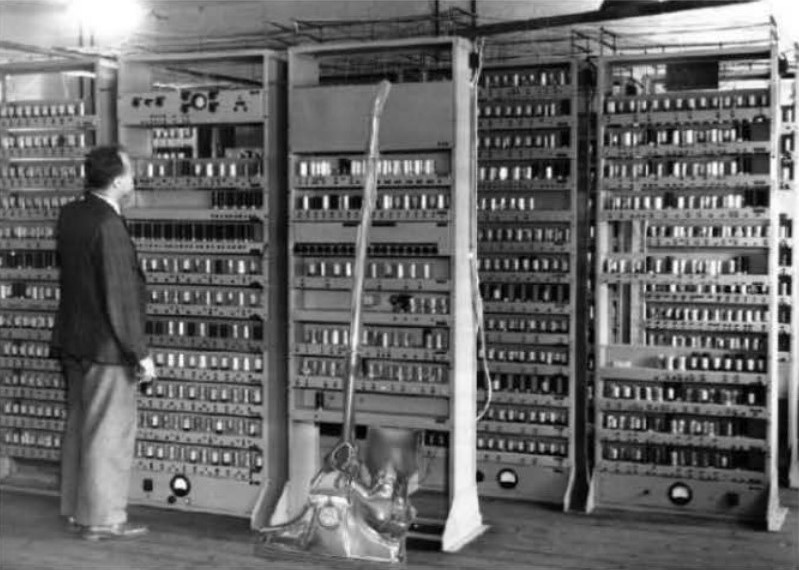
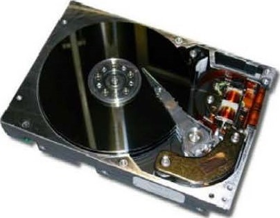
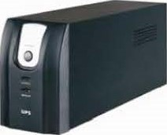
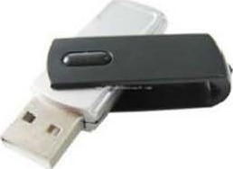

CARA MERAKIT KOMPUTER
Cara Merakit Komputer BAB 1 |
| Sejarah Komputer |
Pada awalnya komputer digunakan untuk menghitung aritmatika. Namun,sekarang ini komputer diartikan kepada sebuah |
perangkat mesin. Dalam pengertian yang paling mendasar,komputer adalah alat yang mempermudah perhitungan bagi manusia. |
komputer pertama yang digunakan pada waktu itu yaitu sempoa yang digunakan untuk melakukan operasi artimatika dasar. |
Sempoa atau Abacus merupakan awal dari lahirnya komputer. Komputer dalam melakukan prosesnya berbentuk elektronik, |
yang memungkinkan untuk melakukan perhitungan yang lebih luas dan cepat. |
|
Komputer Generasi Pertama (1940-1950)

Komputer Generasi Pertama menggunakan beberapa tabung vakum yang besar dan kompleks seperti crystal diodes, |
relays, resistors, dan capacitros yang membutuhkan daya listrik sebesar 150 kilowat. komputer elektronik pertama |
yang di gunakan untuk umum yaitu ENIAC (Electronic Numerical Integrator And Computer). sudah berbentuk digital, |
namun belum menggunakan kode biner sebagai prosesnya. Digunakan untuk memecahkan rangkaian lengkap tentang |
masalah komputasi. Diprogram menggunakan plugbroad dan switch, yang sudah mendukung input dari dan oatput dari |
IBM card. |
Komputer Elektronik pertama yang digunakan untuk non umum Yaitu ABC (Atanasoff-Berry Computer), ten British, |
Colossus computers, german Z3, LEO, UNIVAC, dan Harvard Mark I. |
Komputer Generasi Kedua (1955-1960)
Komputer generasi kedua muncul setelah ditemukannya transistor, yang kemudian mulai mengganti tabung vakum dalam desain |
komputer. Dengan transistor, daya, panas dalam bentuk jauh lebih kecil dibandikan dengan komputer generasi pertama. Namun, |
masih jauh lebih besar dengan komputer sekarang ini. |
Komputer dengan transistor pertama ini dibuat di University of Manchester pada tahun 1953. Yang paling populer dari komputer |
transistor generasi kedua ini adalah IBM 1401. IBM juga menciptakan drive pertama (sebuah media peyimpanan) pada tahun 1956, |
yang di kenal dengan IBM 350 RAMAC. |
Komputer Generasi ketiga (1960)
penemuan Integrated Circuits (IC) atau dikenal juga dengan microchips, membuka jalan untuk komputer generasi ketiga atau |
yang kita kenal dengan komputer saat ini. berbentuk jauh lebih kecil dengan generasi komputer sebelumnya, dengan transistor |
yang lebih banyak dan dibenamkan kedalam microchips tunggal. Dalam tahap perkembangannya komputer generasi kedua masih bertahan. |
pertama munculnya minicomputer yang didasarkan pada kedua transistor dan microchips seperti IBM System/360. |
komputer ini lebih kecil dan lebih murah daripada generasi-generasi sebelumnya. komputer Generasi ketiga dikenal sebagai mainframe |
komputer. Minicomputer dapat dilihat sebagai jembatan antara mainframe dan microcomputer sebagai proliferasi dalam perkembangan komputer. |
komputer Generasi Keempat (1971)
Microchips berbasis Central Processing Unit (CPU) pertama, terdiri dari beberapa microchips untuk komponen CPU yang berada. Dorongan |
untuk integrasi semakin besar dan miniasturisasi dipimpin menuju single-chip CPU, dimana semua komponen CPU yang diperlukan dimasukkan |
kesebuah microchips tunggal yang disebut microprocessor. Microprocessor pertama yaitu intel 4004. |
Komputer jenis ini yang terus berkembang dan masih digunakan hingga sekarang. |
Hardware
| Cara Merakit Komputer BAB 2 |
| Pengenalan Hadware |
Komponen perangkat keras didalam suatu komputer meliputi alat keluaran dan masukan, |
unit pengolahan pusat (CPU), dan penyimpan utama dan sekunder. |
Bagian-bagian dan Fungsi Hardware Komputer
1. CPU (Central Processing Unit)
CPU berfungsi sebagai pengendali proses kinerja komputer dengan |
kata Iain yaitu sebagai tempat mengatur semua instruksi program pada |
komputer & sebagai pengelola semua aktivitas kinerja di dalam komputer. |
2. Motherboard
Motherboard berfungsi sebagai papan sirkuit utama tempat macam-macam komponen |
elektronik yang saling terhubung yang memiliki chip bios, jalur-jalur & juga konektor sebagai |
penghubung dari masing-masing perangkat yang terpasang. |
Beberapa motherboard ada yang belum memiliki LAN Card dan Sound card, bahkan ada |
pula motherboard yang sudah lengkap bahkan termasuk VGA internal di dalamnya. |
A. LAN Card
LAN Card berfungsi untuk menghubungkan antara komputer satu dengan yang Iainnya |
dalam jaringan LAN. |
B Sound Card.
Sound Card berfungsi sebagai penghubung output audio ke speaker, penghubung input suara ke |
komputer melalui mikrofon. |
3. Processor
Processor berfungsi untuk memproses data yang diterima dari masukkan atau input, kemudian |
akan menghasilkan pengeluaran atau output |
Cara kerja processor akan terus terhubung dengan komponen komputer yang lainnya, terutama |
HardDisk dan RAM. Fungsi processor juga diibaratkan sebagai sebuah otak dari computer. |
4. Video Graphic Array (VGA)
VGA card atau kartu grafis berfungsi sebagai penghubung yang memungkinkan pengiriman data- |
data grafis antara PC dan perangkat display seperti monitor atau proyektor. |
Sebagian besar komputer memiliki VGA yang terpisah sebagai kartu ekspansi yang dipasang pada |
slot motherboard. Namun ada juga komputer yang mempunyai VGA terintegrasi pada motherboard atau |
pada CPU-nya. |
5. HardDisk
HardDisk berfungsi untuk menyimpan data komputer & penyimpanan Operation System (OS) |
serta sebagai alat booting komputer. |

6. RAM / Modul Memori
RAM / Memori berfungsi sebagai perangkat yang menyimpan proses kinerja komputer untuk |
sementara sehingga membuat akses data yang sama lebih cepat. |
7. DVD-Room
Dvd-Room berfungsi sebagai tempat untuk proses burning, copy CD/DVD & install software |
menggunakan CD/ DVD. |
8. Power Supply
Power supply berfungsi sebagai penghantar arus listrik, kontrol voltase pada perangkat keras |
komputer. |
9. UPS
UPS berfungsi untuk menyimpan/menyediakan arus listrik tambahan. |

10. Monitor
Monitor berfungsi sebagai alat output yaitu untuk mengeluarkan hasil proses yang dilakukan oleh |
komputer berupa informasi yang dibutuhkan oleh user/pemakai komputer. |
11. Keyboard
Keyboard berfungsi untuk mengetik/memasukkan huruf, angka, karakter khusus serta melakukan |
perintahperintah untuk menyimpan file & membuka file. |
12. Mouse
Mouse berfungsi untuk menunjuk posisi kursor/pointer pada layar komputer secara cepat. |
13. Speaker
Speaker berfungsi untuk merubah gelombang listrik dari perangkat audio menjadi gelombang |
suara atau getaran. |
14. Printer
Printer berfungsi untuk untuk mencetak data seperti tulisan, gambar/foto pada kertas. |
15. Scanner
Scanner berfungsi untuk memindai (memindahkan)teks dokumen, foto, suatu benda dan |
Iain-Iain. Hasil pemindaian itu akan ditampung ke dalam memori komputer sebagai data digital. |
16. Flashdisk
Flashdisk berfungsi untuk menyimpan data- data komputer secara portable. |

17. Webcam
Webcam berfungsi untuk memudahkan dalam mengolah pesan cepat seperti chat melaui video |
atau bertatap muka melalui video secara langsung. |
18. Headsets
Headsets berfungsi untuk mendengarkan suara & berbicara dengan perangkat komunikasi atau |
komputer. |
Pengenalan Software OS
| Cara Merakit Komputer BAB 3 |
| Pengenalan Software OS |
Software dapat digolongkan menjadi dua, yaitu software sistem komputer dan software sistem operasi komputer. |
Untuk lebih jelasnya akan di jelaskan masing-masing beserta contohnya sebagai berikut : |
Sistem operasi komputer
Merupakan perangkat lunak/software yang bertugas melakukan kontrol dan manajemen |
perangkat keras serta operasi-operasi dasar dari suatu sistem komputer, Manajemen ini termasuk menjalakan |
software aplikasi seperti programprogram pengolah kata, pemutar multimedia, dan sebagainya. Berikut |
contoh-contoh tampilan antarmuka sistem operasi |
-Tampilan Antarmuka Windows 8
-Tampilan Antarmuka Linux Ubuntu
Tampilan Antarmuka Sistem Operasi Mac OS X
Software Aplikasi
Merupakan software yang biasa digunakan dalam kehidupan sehari- hari pengguna komputer. |
Software aplikasi sendiri, ada beberapa jenis : |
- Software pengolah angka
Aplikasi yang difungsikan untuk mengolah angka, dan melakukan berbagai macam perhitungan matematika, |
statistik, dan lain lain. Contohnya : Lotus 123, Microsoft Excel, dan Quattro Pro. |
- Software pengolah kata
Aplikasi yang difungsikan untuk mengolah kata, melakukan berbagai kegitatan tulis- menulis. |
Contohnya M. Word, Notepad, Wordstar, Wordpad, dan Iain lain. |
- Software pengolah grafis
Aplikasi ini digunakan dalam pengolahan gambar. Mulai dari melihat gambar, mengedit gambar, atau langsung |
menggambar dengan komputer. Contohnya : Adobe Photoshop, Microsoft Paint, dan Corel Draw |
- Software pengolah presentasi
Aplikasi ini berguna untuk membantu orang saat presentasi. Dalam aplikasi ini disediakan berbagai |
macam bentuk tampilan untuk presentasi. Contohnya : Microsoft Power Point. |
- Software Pengolah Data
Aplikasi yang digunakan untuk mengolah data (database). Program pengolah data sangat dibutuhkan |
dalam mengolah data yang banyak jumlahnya. Contonya : dBase, Visual Foxpro, Microsoft Access, |
SPSS. |
- Aplikasi Internet
Merupakan aplikasi yang digunakan untuk mengakses internet. Contoh : Internet Explorer, Google |
Chrome, Mozilla Firefox, Opera, Nescape Navigator, Safari, dan lain lain. |
- Video Editing (Pengolah Video)
Aplikasi yang digunakan untuk mengolah video. Contohnya Ulead Video Studio dan Pinneacle |
Studio. |
- Pengembang Program Komputer
Aplikasi yang digunakan oleh para pengembang (Developer) untuk membuat dan mengembangkan |
suatu program aplikasi . Contohnya : Microsoft Visual Basic, java ,dan Borland Delphi. |
- Pengembang Web
Aplikasi yang digunakan untuk membuat dan mengembangkan suatu website / program aplikasi |
berbasis web. Contohnya Microsoft Frontpage dan Macromedia Dreamweaver. |
Hardware Terbaru
| Cara Merakit Komputer BAB 4 |
| Merakit Komputer Bagian Hardware dilengkapi harga |
1. Kisaran harga
Berikut kisaran harga untuk formulasi PC berbasis AMD dan Intel: |
Prosesor :
AMD :
X2 260 (Tray) Athlon I l (3200Mhz,2x1024KiB) Rp 452.000
455 (Box) Athlon I l (3300Ghz,3x512KB) Rp 652.000
Phenom I l X2 555 Black (Box) (3.2Ghz,2x512KB,6Mb) Rp 761.000
X4 965 (Box) Phenom ll- Rp 866.000
Zambezi FX-81 50 Liquid Cooling (3.6Ghz,8Mb) Rp 2.446.000
INTEL :
intel Core i3 540 (Box) (3.06Ghz,C4Mb,Fsb 1333Mhz,Lga 1156) Rp 848.000
intel Core i3 550 (Box) (3.2Ghz,C4Mb 1333Mhz,Lga 1156) RP 995.000
intel Core i5 655K (Box) tanpa fan (2.50Ghz,C4Mb,Lga 1156) Rp 1.858.000
Intel Core i5 760 (Box) (2.80Ghz,C8Mb,Lga 1156) Rp 1.705.000
Intel Core i7 870 (Box) (2.93 Ghz,C8Mb,Lga 1156) Rp 2.487.000
Motherboard :
AMD :
ACE APA-M61D3 Rp 404.000
ASRock 890FX Deluxe 5 Rp 1.681.000
Asus M4A785T-M Rp 936.000
Biostar TA890GXE (D3,AM3) Rp 941.000
ECS A880GM-A3 USB 3.0 Rp 825.000
INTEL :
ASRock H55M-LE Rp 657.000
Biostar TH55XE Rp 945.000
Intel DP55WG (i5,ATX) Rp 1.522.000
Jetway J-NC97R-LF Rp 1.297.000
Foxconn H55MXV-LE PTIJOI (USB 3.0) Rp 782.000
INTEL :
intel Core i3 540 (Box) (3.06Ghz,C4Mb,Fsb 1333Mhz,Lga 1156) Rp 848.000
intel Core i3 550 (Box) (3.2Ghz,C4Mb,Fsb 1333Mhz,Lga 1156) Rp 995.000
intel Core i5 655K (Box) tanpa fan (2.50Ghz,C4Mb,Lga 1156) Rp 1.858.000
intel Core i5 760 (Box) (2.80Ghz,C8Mb,Lga 1156) Rp 1.705.000
intel Core i7 870 (Box) (2.93Ghz,C8Mb,Lga 1156) Rp 2.487.000
Motherboard :
AMD :
ACE APA-M61D3 Rp 404.000
ASRock 890FX Deluxe 5 Rp 1.681.000
Asus M4A785T-M Rp 936.000
Biostar TA890GXE (D3,AM3) Rp 941.000
ECS A880GM-A3 USB 3.0 Rp 825.000
INTEL :
ASRock H55M-LE Rp 657.000
Biostar TH55XE Rp 945.000
Intel DP55WG (i5,ATX) Rp 1.522.000
Jetway J-NC97R-LF Rp 1.297.000
Foxconn H55MXV-LE PTIJOI (USB 3.0) Rp 782.000
Memori Ram :
Kingstone KHX 6400 D2LLK2 2Gb Rp. 408.000-
Kingstone KHX 8500 D2K2 / 2Gb Rp. 421.000,-
Muscle Power DDR2-800 1Gb Rp. 118.000-
Muscle Power DDR2-800 2Gb Rp. 198.000,-
OCZ IxiGb Gold Edition PC2-5400 667Mhz 4-4-4-12 Rp. 223.000,-
TEAM Elite IGB PC6400 TEDD1024M800HC5 DDR2 800MHz Elite (Heat Spreader) IGB CL 5-5-5-1 5 Rp. 125.000,-
Transcend Jetram I Gb DDR2-800MHz (Kit Dual Chanel) Rp. 310.000,-
Transcend Jetram IGb DDR2-800MHz (PC6400) Rp. 210.000,-
V-GEN 2Gb PC 6400 Rp. 208.000,Venomrx IGb PC 6400 Rp. 82.000,venomrx IGb pc 6400 Gamers Series With Heatsink Rp. 99.000,-
HardDisk :
Samsung IDE 160Gb 8Mb 5400rpm Rp. 460.000,-
Samsung Sata 320Gb 8Mb 5400rpm Rp. 369.000,-
Samsung Sata 500Gb 8Mb 5400rpm Rp. 451.000,-
Seagate Sata 250Gb Rp. 373.000,-
Seagate Sata 320Gb Rp. 407.000,-
Seagate Sata 500Gb Rp. 538.000,-
Seagate Sata 500Gb XT 32Mb Rp. 979.000,-
Seagate Sata 750Gb Rp. 820.000,-
Toshiba Sata 250Gb 5400rpm Rp. 369.000,-
Toshiba Sata 320Gb 5400rpm Rp. 382.000,-
Toshiba Sata 500Gb 5400rpm Rp. 481.000
Toshiba Sata 500Gb 7200rpm Rp. 625.000,-
Toshiba sata 750Gb 5400rpm Rp. 687.000,-
WDC Sata 320Gb 8Mb 5400rpm Blue Rp. 404.000,-
WDC Sata 500Gb 8Mb 5400rpm Blue Rp. 507.000,-
VGA :
Asus HD 5750 Formula IGb 128Bit DDR5 Rp. 1.254.000,-
Asus HD 5770 IGb 128Bit DDR5 Rp. 1.357.000,-
Digital Alliance GTX 550 Ti 1024Mb 256Bit DDR5 Rp. 1.263.000,-
Gigabyte HD 6770 IGb 128Bit DDR5 (GV-R677UD-1GD) Rp. 1.280.000,-
Leadtek Quadro 295 NVS - 256 MB DDR3,64bit,2DVI Rp. 1.984.OOO,-
MSI HD 6850 Barts I Gb 256Bit DDR5 R6850 Rp. 1.718.000,-
PixelView GTS 450 IGb 128Bit DDR5 Rp. 1.112.000,-
Point Of View GTX 460 768Mb DDR5 1.589.000,-
Sapphire HD 6870 IGb 256Bit DDR5 Rp. 2.040.000,-
Sparkle GTS 450 2Gb 128Bit DDR3 Rp. 1.052.ooo,-
Sparkle GTX 470 Platinum 1280Mb 320Bit DDR5 Rp. 2.057.000,-
Sparkle GTX 550 Ti Platinum IGb 128Bit DDR5 Rp. 1.280.000,-
XFX HD 6770 IGb 128Bit DDR5 (HD-677X-ZNLC) Rp. 1.160.000,-
XFX HD 6790 IGb 256Bit DDR5 (HD-679X-ZDFC) Rp. 1.417.000,-
Zotac GTX 550 Ti IGb DDR5 Rp. 1.287.000,-
Casing :
Aerocool Shark 140mm (White Edition) Rp. 125.000,-
Cooler Master Elite 371 Black with Side Panel RC-371-KWN1 Middle Tower Rp. 395.000,-
Cooler Master Elite 371 Black with Side Window 460W RC371 K-KKR460 Middle Tower Rp. 666.000,-
Cooler Master Elite 430 all Black with Side Panel RC-430-KWN1 Middle Tower Rp. 438.000,-
Cooler Master Enforcer SGC-1000-KWN Rp. 876.000,-
Power Supply :
ENLIGHT BLACK SILVER 1000W Rp. 1.888.000,-
ENLIGHT BLACK SILVER 1200W Rp. 2,188.000,-
ENLIGHT BLACK SILVER 550 Watt Rp. 635.000,-
Gigabyte LC 400 400W (GE-N400A-C2) Rp. 326.000,-
Gigabyte LC 500 GE-N500A-C2 Rp. 481.000,-
Seasonic 760W SS-750JS-BE 80 Plus Rp. 795.000,-
X-Sirius ATX-0250G 500 Rp. 460.000,-
XFX 650W XXX Edition Rp. 1.074.000,-
Optical Drive :
Asus DVDRW External Slim Rp. 365.000,-
Axioo DVDRW Ext White Rp. 300.000,-
Benq DVDRW LD2000 Rp. 490.000,-
LG DVDRW IDE 22x Box Rp. 185.000,-
LG DVDRW sata Box Rp. 182.000,-
LG DVDRW Sata OEM Rp- 161.000,-
MSI DVDRW Ext U0700 Black / White Box Rp. 344.000,-
Pioneer Blue Ray BDR-S05XLB Internal Rp. 2.160.000,-
Samsung Combo Blueray Rp. 775.000,-
Samsung DVD Rom Sata Rp. 121.000,-
Sony DVDRW Sata 24x Oern Rp. 163.000,-
Sony FDD External Box Rp. 249.000,-
Monitor LCD :
Acer 20 Inch P206HL LED Rp. 1.675.000,-
Acer 24 Inch GN245HQ + Kacamata 3D NVIDIA Rp. 4.925.000,-
Asus 21.5 Inch VH222H Rp. 2.001.000,-
Asus 23 Inch VG236HE Rp. 4.823.000,-
Asus 24.1 Inch PA246Q Rp. 5.571 000,-
Asus 27 Inch VE278Q Rp. 5.038.000,-
BenQ 15.6 Inch G61 OHDAL LED Rp. 668.000,-
DELL 21.5 Inch P2211H LED Rp. 1.730.OOO,-
Lenovo 20 I nch L2060 Rp. 1.482.000,-
Keyboard & Mouse :
Keyboard
LOGITECH Keyboard USB K120 Rp. 72.000,-
LOGITECH Ultra Flat Keyboard USB Rp. 118.000,-
LOGITECH Ultra Flat keyboard, Black, USB KEYBOARD and DESKTOP Rp. 120.000,-
Steelseries Shift Rp. 900.000,-
Steelseries Shift Medal Of Honour Edition Rp. 1.220.000,-
Steelseries ZBD Star Craft II ass Rp. 600.000,-
Mouse
LOGITECH M515 Rp. 375.000,-
LOGITECH MX 518 Rp. 260.000,-
LOGITECH Optical Mouse M115 Rp. 105.000,-
LOGITECH Optical Mouse Usb Rp. 48.000,-
Razer Orochi Mousefeet Rp. 100.000,-
Razer Spectre Star Craft II Edition Rp. 770.000,-
Razer Star Craft II Messenger Bag ( Accessories) Rp. 800.000,-
Steelseries Ikari Laser White / Black Rp. 770.000,-
2. Persiapan Komponen dan perlengkapan
Untuk merakit sebuah komputer personal akan diperlukan komponen komputer paling sedikit |
sebagai berikut |
a. Monitor |
b. Motherboard (mainboard) ada 2 jenis yakni yang mampu mengendalikan processor baik AMD atau Intel. |
c. RAM (Random Access Memory), dipilih yang sesuai dengan motherboard yang kita miliki. |
d. HardDisk |
e. I / O card bila dibutuhkan. Karena pada beberapa jenis motherboard telah memiliki slot yang berfungsi sebagai I/O slot. |
f. Keyboard & Mouse |
g. Perangkat Iain yang dapat anda tambahkan adalah CD/ DVD ROM drive, soundcard & speaker system, dan video card. |
h. Software OS dan software aplikasi. Flashdisk atau DVD-ROM |
yang berisi software sistem operasi dan software aplikasi. |
i. Perlengkapan lainnya |
perlengkapan lain yang perlu dipersiapkan dalam proses antara lain: |
-Kelengkapan komponen seperti kabel, sekerup, jumper, baut dan sebagainya, |
-Buku manual dan referensi dari komponen, |
-Alat bantu berupa obeng pipih dan plus, |
-Driver mainboard dan program aplikasi. |
Langkah 1
Siapkan semua komponen-komponen untuk merakit |
komputer |
Komponen Komputer
Sebelum mulai merakit komputer siapkan semua keperluan yang telah disebutkan |
sebelumnya. |
Langkah 2
Pasangkan Processor, CPU Cooler dan Memory/RAM ke |
Motherboard |
Processor terletak pada socket yang terdapat pada Motherboard, |
dan dapat diganti denganProcessor yang lain asalkan sesuai dengan |
socket yang ada. Salah satu yang sangat besar pengaruhnya terhadap |
kecepatan komputer tergantung dari jenis dan kapasitas Processor. |
Cara memasang Processor adalah sebagai berikut: |
-Buka pengunci Socket Processor pada Motherboard. |
Memasang Processor
-Pasangkan Processor ke Motherboard, (Processormempunyai |
tanda pada salah satu sudutnya, dalam hal ini biasanya ditandai |
dengan lekukan, lubang atau anak panah). |
Cocokan tanda tersebut dengan tanda yang ada pada Socket |
Processor (Jika kita melakukan dengan benar, maka processor |
akan dapat dimasukkan dengan mudah). |
-Kemudian kunci kembali socket tersebut, dengan cara |
menekan tuas kebawah dan mengaitkan pada pengunci yang |
ada. |
Cara Memasang CPU Cooler (PENDINGIN CPU) |
-Siapkan CPU Cooler dan Pasta Processor. |
Memasang CPU Cooler
-Lapisi Processor yang sudah terpasang dan permukaan CPU |
Cooler dengan pasta yang sudah dipersiapkan tadi. |
-Kemudian pasangkan CPU Cooler tepat diatas Processor yang |
sudah terpasang, dan kemudian kencangkan pengunci pada CPU Cooler. |
-Hubungkan kabel yang terdapat pada CPU Cooler dengan Motherboard. |
Cara Memasang Memory/RAM |
Memasang Memory/RAM
-Perhatikan slot memory kita, apakah sudah sesuai |
dengan jenis memory yang Anda gunakan. |
Jika sudah sesuai, maka pasangkan memory komputer |
kita pada slot yang sudah disediakan. |
Kemudian klik pengait pada masing-masing ujung |
memory agar memory tidak bergerak-gerak. |
Langkah 3
Memasang HardDisk dan CD/ DVD Drive. |
Hardisk ATA dan SATA
Sebelum memasang hardDisk kenali jenis HardDisk yang akan kita gunakan. Untuk jenis HardDisk |
yang sering digunakan saat ini yaitu HardDisk ATA dan SATA. Jika menggunakan HardDisk ATA maka |
kabel penghubung dari HardDisk ke motherboard yang harus kita gunakan adalah Kabel IDE, dan jika |
menggunakan HardDisk SATA maka menggunakan kabel SATA. |
Perbedaan kabel IDE dan SATA terletak pada fisik kabel, kabel ATA lebih lebar dari pada kabel SATA |
Biasanya kabel ATA digunakan untuk beberapa perangkat lain selain daripada HardDisk seperti |
CD/DVD-ROM. |
Cara memasang Hardisk dan CD/DVD Drive adalah sebagai berikut:
Memasang Jumper Hardisk |
Tahapan selanjutnya yang pertama harus diperhatikan adalah, mengatur jumper pada HardDisk. |
& Jumper ini ada di bagian belakang HardDisk dan memiliki tiga sampai lima pasang pin. |
Jika HardDisk yang akan kita pasang cuma satu, maka setting jumper ke posisi "MASTER". Jika ada |
dua HardDisk, maka cabut jumper HardDisk ke dua dan posisikan sebagai "SLAVE". Cara pemasangan |
jumper biasanya ada pada Sisi atas hardisk. |
Pasang kabel data SATA pada port data yang terdapat di belakang hardisk. Cocokkan ujung kabel |
dengan port data di hardisk, jadi tidak mungkin terbalik . Lalu, pasang ujung satunya dari kabel data |
tersebut pada port SATA 1 atau primary SATA pada motherboard. |
Cara pemasangannya sama dengan pemasangan ke HardDisk. |
Kemudian letakkan HardDisk pada tempat yang sudah disediakan di casing, biasanya ada beberapa |
slot, kemudian kencangkan dengan skrup. Setelah itu pasanglah kabel power dari power supply ke |
HardDisk. Jika menggunakan power supply model lama yang tidak mempunyai kabel power untuk |
SATA, kita bisa menggunakan kabel power konverter (lihat gambar). |
Cara Memasang Hardisk |
Untuk pemasangan CD/DVD drive sama halnya dengan pemasangan HardDisk. Hanya |
penempatannya saja yang sedikit berbeda, |
Langkah 4
Merakit kabel komputer
Setelah semua komponen komputer terpasang, selanjutnya adalah merakit kabel-kabel |
komputer, baik kabel 1/0, kabel HardDisk, kabel DVD ROM, Kabel power CPU dll. Kita cukup |
memperhatikan gambar berikut ini untuk panduan memasang kabel-kabel untuk merakit komputer. |
Tahap ini merupakan salah satu yang paling central dalam merakit sebuah komputer, jika |
kabel yang kita hubungkan ternyata salah maka akan berakibat fatal. Setiap kabel sudah disetting |
sedemikian rupa agar berbeda dengan yang Iain, jadi kita tinggal mencocokkan saja dengan |
colokannya. Berikut adalah beberapa gambar untuk merakit kabel-kabel komputer. |
Merakit Kabel Komputer
Setelah tahapan ini selesai kita tinggal menutup casing cpu serta menyekrupnya dan |
memasangkan kabel power, kabel vga, kabel speaker serta kabel mouse dan keyboard pada cpu. Dan |
komputer dapat di coba untuk dijalankan. |
Pemeriksaan Hasil Perakitan Komputer
Setelah komputer selesai dirakit, kita dapat melakukan pemeriksaan dan pengetesan |
hasilnya dengan program BIOS, caranya yaitu |
Nyalakan komputer dan monitor, lihat layar monitor dan juga dengarkan suara dari speaker. Saat |
dinyalakan program Fost dari Bios akan otomatis mendeteksi hardware apa saja yang sudah |
dipasang pada komputer. |
Lakukan setting untuk nilai dari kapasitas HardDisk dan boot sequence. Kalau sudah lalu simpan hasil |
settingan dan exit dari setup BIOS, maka komputer meload system operasi dengan urutan pencarian yang disesuaikan |
dengan settingan boot sequence pada Bios. Masukkan CD Bootable yang berisi sistem operasi pada drive pencarian dan |
restart. Sekarang komputer telah siap untuk di install OS. |
Solusi bila terjadi masalah pada hasil perakitan komputer |
- Hidupkan komputer, apabila komputer dan monitor tidak hidup, periksa kabel daya pada colokan listrik sudah terhubung |
apa belum. |
- Apabila waktu dinyalakan, tampilan layar monitor ngeblank / berwarna hitam, pasti ada kesalahan dan apabila |
pada CPU terdengar bunyi beep, maka betulkan penempatan RAM / memori pada soket. |
- Apabila card adapter tidak terdeteksi, periksa penempatan card adapter sudah pas apa belum ke slotnya. |
- Apabila LED dari HardDisk atau CD menyala terus, periksa konektornya sudah terhubung apa belum. |
Instalasi OS
| Cara Merakit Komputer BAB 5 |
| Merakit komputer bagian 2 instalasi OS |
Pada tahap ini kita akan melakukan penginstalan OS, setelah pengecekan bahwa perakitan |
tidak mengalami masalah. Dalam penginstalan OS ada berapa tahapan, dan untuk penginstalan OS |
windows, Ubuntu, maupun Mac OS tidak terlalu berbeda jauh. Namun pada kesempatan ini kita coba |
penginstalan system operasi windows 7. |
Langkah-langkah menginstal Windows 7 |
adalah sebagai berikut. |
1. Masukkan CD/Flashdisk yang berisi OS Windows 7 berformat |
ISO dan jalankan sehingga file instalasi Windows |
7. |
2. Setelah berjalan, maka tampil pengaturan bahasa yang |
akan digunakan, waktu, dan jenis metode masukan keyboard. |
jika sudah diatur, klik next. |
3. Klik Install now untuk memulai instalasi. Untuk pilihan lainnya seperti What to know |
before installing windows untuk mengetahui segala hal yang perlu diketahui sebelum |
menginstal dan pilihan repair your computer untuk memperbaiki Windows terpasang |
yang mengalami kerusakan. |
4. Tunggu beberapa saat, sehingga muncul pernyataan |
lisensi. Centang pada I accept the licence terms lalu klik next. |
5. Selanjutnya akan muncul pilihan instalasi. |
-Pilihan Custom (advanced) untuk melakukan proses instalasi yang |
mana dalam prosesnya akan mengubah partisi yang ada, |
-Upgrade hanya mengubah versi terbaru dari windows tanpa mengubah |
data yang ada dalam komputer. |
6. Lalu akan muncul tampilan untuk memulai proses partisi, klik Drive options (advanced) |
lalu pilih new pada tampilan selanjutnya. |
7. Tentukan besarnya memori yang akan digunakan untuk menyimpan |
file sistem instalasi dan berapa besarnya tiap partisi yang |
dibuat sebagai Drive penyimpanan, lalu klik Apply. |
8. Pada langkah ke-7 kita membagi HardDisk komputer menjadi 3 drive. |
9. Setelah proses partisi selesai klik next, maka proses instalasi akan |
berjalan dengan sendirinya. |
10. Ketika proses instalasi selesai, komputer akan melakukan restart ulang beberapa kali. Setelah semua selesai |
maka akan muncul tampilan untuk mengisikan username serta mengisikan juga nama dari tipe komputer, |
misal komputer pribadi, komputer kerja, atau lainnya. Isikan sesuai keinginan lalu klik next. |
11. Sekarang masukkan password komputer untuk masuk ke akun kita nantinya. |
Abaikan jika tidak akan memberi password, klik next |
12. Selanjutnya masukkan produk key untuk lisensi keabsahan Windows yang didapat saat membeli CD |
insatalasi, lalu klik next |
13. Kemudian akan muncul tampilan Set Up Windows seperti gambar dibawah. Akan ada 3 pilihan, yaitu use |
recommended settings untuk memasang pembaharuan penting dan direkomendasikan oleh windows, |
install/ important updates only untuk memasang pembaharuan keamanan dan komponen yang penting |
untuk windows, dan ask me later untuk memberitahu kita nanti jika ada pembaharuan baru untuk kita instal |
atau tidak. Untuk amannya, maka kita pilih Uses recommended setting. |
14. Kemudian atur waktu dan zona waktu yang digunakan untuk OS Windows nantinya, lalu klik next. |
15. Tampilan berikutnya menampilkan jenis jaringan yang akan digunakan. Ada 3 pilihan jaringan, antara lain |
Pilihan Home Networkjika kom puter menggunakan jaringan di area rumah saja, Works Network jika |
komputer menggunakan jaringan di area kantor atau tempat kerja saja, dan Public Network jika komputer |
menggunakan jaringan di area umum (dimana saja). Jadi untuk menggunakan jaringan dimana saja, maka |
pilih Pubic Network. |
16. Tunggu komputer menyelesaikan konfigurasi. Setelah selesai, maka akan muncul tampilan desktop Windows 7. |
Instalasi Driver dan Instal Software umum
| Cara Merakit Komputer BAB 6 |
| Merakit kumputer bagian instalasi driver dan instal software umum |
1. Instalasi driver
Instalasi driver pada umumnya ialah menginstal aplikasi/driver dari hardware komputer kita. Aplikasi ini |
didapat dari CD yang disertakan pada tiap paket hardware yang kita beli, atau kita dapat pula |
mendownloadnya di situs resmi merk hardware tersebut. Untuk penginstalanya cukup kita masukan CD |
dan tunggu sampai komputer membaca CD yang kita masukan lalu install seperti biasa. Driver ini berfungsi |
untuk memaksimalkan performa dari hardware yang kita miliki. Setelah semua driver telah kita install lalu |
restartlah komputer. Dan computer telah siap digunakan untuk keperluan sehari hari serta install software |
umum lainnya. |
2. Software umum
Software umum yang dimaksud disini ialah aplikasi yang umum / sering digunakan dalam menggunakan |
komputer. Ada beberapa contoh aplikasi yang paling sering digunakan, kita akan coba berapa contoh yang paling |
sering digunakan : |
1. Ms. Office
Ms. Office terdiri dari beberapa program diantaranya yaitu Microsoft word, excel, powerpoint, access, |
outlook. Aplikasi ini berguna dalam penulisan, persentasi, serta perhitungan. |
Langkah-langkah menginstall microsoft office 2010:
1. Siapkan softwaare Microsoft Office 2010 bisa |
berupa dalam CD/DVD ataupun .rar |
2. Bila menggunakan CD/DVD masukkan kedalam CD/DVD |
ROM, jika .rar extract file tersebut |
3. Pilih SETUPEXE |
4. Setelah klik setup, tunggu proses instalasi tersebut berjalan |
5. Selanjutnya masukan product key, product key biasanya berjumlah 25 digit yang kita dapatkan |
sewaktu membeli aplikasi Micorosoft office, baik angka maupun huruf. |
6. Centang pada tulisan " I accept the terms of this agreement Ialu klik continue. |
7. Setelah itu kita diminta memilih " Upgrade " atau " Costumize" kalau upgrade adalah untuk meng- |
install semua paket microsoft office yang ada. Jika kita tidak mau menginstal semua aplikasi, maka kita |
bisa menggunakan customize untuk memilih beberapa aplikasi yang kita butuhkan. |
Lalu kita pilih upgrade seperti dibawah ini |
Sedang gambar dibawah ini kalau kita pilih customize
Tetapi setelah kita memilih microsoft yang kita perlukan kemudian kita klik " upgrade " |
8. Instalasi microsoft office 2010 akan berjalan dan tidak |
membutuhkan waktu yang cukup lama. |
9. Setelah semua proses instalasi selesai kita akan disuruh memilih antara go to office online atau |
close, tetapi yang kita pilih close " karena untuk menyelesaikan proses instalalsi tersebut. |
10. Instalasi mirosoft office 2010 telah selesai |
2. Mozilla firefox
Mozilla merupakan aplikasi internet browser yang sudah banyak digunakan orang. Aplikasi ini |
tergolong mudah dan free untuk di download. |
Cara install mozilla
Klik 2x pada file Firefox.exe yang sudah kita download dan klik run |
Klik Next dan Next hingga selesai. Pada tahap ini, kita cukup melakukan klik pada opsi Next |
karena secara otomatis firefox mendeteksi direktori instalasi default yaitu pada C: \ Program |
Files\ Mozilla Firefox |
Setelah semua proses instalasi selesai, akan muncul ikon Firefox pada desktop komputer. Untuk |
menjalankan Mozilla Firefox, klik 2 pada ikon tersebut. |
3. Antivirus
Antivirus pada komputer berfungsi sebagai perlindungan komputer dari terserang virus yang dapat |
mengakibatkan data hilang/terhapus, file hidden, dan berbagai masalah komputer yang disebabkan |
virus. Aplikasi antivirus komputer ada banyak macamnya, dari mulai yang free hingga yang berbayar. |
Kali ini kita mencobamenginstal aplikasi anti virus yang free dari smadav. |
Berikut ini panduan cara install aplikasi antivirus smadav :
1. Pastikan kita telah memiliki aplikasi smadav terlebih dahulu, lalu klik double.
2. Kemudian akan muncul jendela syarat dan ketentuan layanan smadav. Klik tombol accept
3. Akan tampil smadav extractor, klik pada tombol Instal
4. Setelah selesai, kembalilah pada direktori / tempat smadav di simpan tadi. nanti akan muncul
folder baru yang bernama smadav dengan versinya. buka folder itu
5. Setelah folder di buka, nanti akan tampil beberapa file, silahkan double klik pada file yang berlogo
smadav.
6. Jika muncul pesan seperti gambar di bawah ini. Silahkan klik pada tombol Yes
7. Sekarang aplikasi antivirus smadav telah berhasil diinstall di kompter atau laptop kamu
Teknik Penanganan Troubleshoting 1
| Cara Merakit Komputer BAB 7 |
| Teknik Penanganan Troubleshoting 1 |
Permasalahan yang sering terj adi pada Komputer. |
1. Masalah : Pada saat awal dinyalakan, komputer menampilkan tulisan "CMOS check sum error". Ini |
menandakan bahwa batu baterai BIOS nya sudah low. |
Penyelesaian : Dengan mengganti baterai BIOS sesuai dengan ukuran aslinya |
2. Masalah : Komputer tidak menampilkan apa-apa sewaktu dihidupkan, tidak ada suara yang keluar dari speaker. |
speaker. |
Penyelesaian : Cobalah periksa kabel penghubung antara VGA dengan monitor. Jika tidak ditemukan adanya |
masalah, ada kemunkinannya adalah VGA Cardnya yang rusak. |
3. Masalah : Komputer mengeluarkan suara beep berulangulang sewaktu dihidupkan |
Penyelesaian : Coba periksa RAM nya, mungkin ada debu / kotoran, coba di lepas dan dibersihkan dengan penghapus pada |
bagian yang akan dicolokan, lalu di pasang kembali. Jka masih sama, coba ganti RAM nya. |
4. Masalah : Saat dihidupkan, indikator HardDisk menyala terus. |
Penyelesaian : Kemungkinan HardDisk sudah terkena BAD Sector pada Sector nol nya. Bila belum terlalu parah, |
masih bisa di Low Level Format, selanjutnya di partisi dan di format, kemudian coba discandisk dengan surface |
check |
5. Masalah : Komputer muncul tampilan pesan DISK BOOT FAILUR OR NON SYSTEM ON DISk |
Penyelesaian : Ini menandakan pada Disk tidak terdapat system untuk di load ke RAM, atau HardDisk belum di |
set menjadi active pada waktu melakukan partisi. |
6. Masalah : saat login Windows, tampilannya pecah-pecah jika di set ke high ataupun true colour |
Penyelesaian : menandakan VGA Card sudah tidak mampu untuk menampilkan warna dan resolusi maksimum. |
Teknik Penanganan Troubleshoting 2
| Cara Merakit Komputer BAB 8 |
| Teknik Penanganan Troubleshoting 2 |
1. Masalah : Windows Desktop Blank pada Startup
Penyelesaian : Ketika Windows desktop kita mengalami blank alias layar hitam, coba jalankan Task Manager |
dengan menekan kombinasi tombol Ctrl + Alt + Delete. Jika Task Manager masih berfungsi, kita bisa |
menjalankan aplikasi tertentu melalui tombol New Task pada Tab Application. |
Tampilan Task Manager
Dari situ kita dapat menjalankan Command Prompt dengan mengetik cmd untuk melakukan System File Checker |
atau membuka Windows explorer dengan mengetik explorer. exe untuk sekedar melakukan back up data penting |
sebagai tindakan pencegahan dampak kerusakan lebih lanjut. |
2. Masalah : Windows Tidak Mau Booting
Penyelesaian : Kita dapat mencoba untuk menggunakan menu Safe Mode yang disediakan untuk Windows. |
Dengan cara, pada saat komputer dihidupkan cepat tekan F8 berulang-ulang sampai muncul menu Safe Mode. |
Setelah itu pilih bagian Last Known Good Configuration. Dengan begitu, Windows akan memulai pada |
konfigurasi terakhir yang dianggap paling bagus. Setelah berhasil masuk sistem, lakukan pengecekan lagi. |
3. Masalah : windows blue screen
Penyelesaian : Bila Blue Screen baru saja terjadi pada komputer maka sebaiknya segera menggunakan System |
Restore untuk mengatasinya. lni berguna untuk membuat komputer kembali ke keadaan awal. |
4. Masalah : Processor overhead
Penyelesaian pengecekan pada fan processor dan lakukan pembersihan, serta perhatikan sirkulasi |
udara pada komputer. Bila cara ini tidak bisa cobalah untuk mengganti heatsink serta menambah fan |
processor. |
Instalasi Driver dan Instal Software umum
| Cara Merakit Komputer BAB 9 |
| Cara mendapatkan harga murah untuk Hardware |
Pada materi ini kita akan membahas bagaimana cara mendapatkan perlengkapan komputer dengan murah. |
Terkadang kurangnya informasi dalam mengetahui pasaran harga dapat menjebak kita dalam |
mendapatkan hardware yang kita inginkan. Berikut beberapa cara mendapatkan hardware dengan cara |
murah : |
I. Sering-sering lihat situs jual beli online
Jaman sekarang ini sudah banyak bertebaran situssitus online penjualan, selain memudahkan |
pembelian kita juga dapat dengan membandingkan harga dari masing-masing situs. Berikut beberapa situs |
yang paling terkenal |
1. Bhinneka-http://www.bhinneka.com/ category/ softw are_operating_system_fpp.aspx
2. Lazada-http://www.lazada.co.id/ beli-sistemoperasi/ microsoft/
3. Rakitan - http:/ / rakitan.com/ kategori.php?id= 42
4. BliBIi - http:/ / www.blibli.com/ softw are/ 41 584/ c3
5. EnterKomputer - http:// enterkomputer.com/ software.php
6. Viralndo (Hanya harga saja) - http:/ / viraindo.com/ software.html
7. KliknKlik - http:/ / kliknklik.com/ 76-operatingsy stem
8. ELS - http:/ / els.co.id/ products/ 1 87/ 0/ SOFTW ARE/
9. JakartaNotebook - http:/ / w w w .jakartanotebook. com/ operatin g-sy stem
10. Mangga Dua Komputer - http:/ / manggaduakomputer. com/ index.php?option= com_ virtuemart& page: shop.brow category _ id= 107 & I temid= 10
11. NanoKomputer - http:/ / w w w .nanokom puter.com/ index.php?cPath= 24_21 6&osCsid= 4fe51 3fd6e8562 05744bOfOe28e75223
12. AnugrahPratama - http:/ / w w w .anugrahpratama. com/ category/ microsoft/
2. Selalu cek promosi-promosi yang ada di daerah anda
Salah satu tips mendapatkan hardware dengan murah ialah dengan mengecek promosi-promsi |
serta event pameran komputer yang ada disekitar kita. Karena pada saat promo/ event |
seperti ini banyak berkumpul toko - toko komputer dalam satu tempat. Jadi memudahkan kita |
dalam membandingkan harga. |
3. Relasi
Bila kita memiliki teman atau kenalan yang bekerja di toko ataupun perusahaan hardware cobalah |
untuk menanyakannya, biasanya pekerja yang ditoko tertentu bisa mendapatkan potongan harga bila kita |
mengenalnya. |
4. Membeli di satu tempat
Bila kita akan membeli banyak hardware usahakan di satu tempat, ketika kita beli banyak cobalah |
untuk menawaar dengan harga borongan. |
Bonus Windows 8 tips and trik
Windows 8 merupan seri terbaru dari windows yang telah ada. Perubahan yang terjadi dari sistem |
pengolahan aplikasi dan interface yang disajikan oleh Windows 8. Bila dibandingkan dengan Windows 7, |
Windows 8 ini lebih menarik dan penuh nuansa keceriaan serta tidak dipandang membosankan. |
1. Kunci Layar
Windows 8 juga memiliki fitur kunci layar yang juga terdapat pada versi windows 7. Namun, kunci layar |
pada windows 8 bersatu dengan halaman muka Windows dan hampir tidak terlihat. Secara umum fungsi |
kunci layar sistem operasi selalu diimplementasikan dengan gambar akun. |
2. Navigasi Dasar
Windows 8 memiliki antar muka yang baru dan Iebih fresh. Aplikasi disusun dalam bentuk blok kotak- |
kotak warna warni. Untuk mengatur letak aplikasi dengan teknik drag and drop (klik dan tarik) ke posisi sesuai |
keinginan kita. Daftar aplikasinya memanjang ke arah kanan dan dapat diakses menggunakan scroll pada mouse. |
Gunakan tombol Home, End dan Up,Down untuk akses ujung kanan dan kiri. Tombol Windows dan escape (esc) pada |
keyboard digunakan untuk kembali ke desktop. Tombol panah kiri, atas, kanan, bawah juga dapat digunakan untuk |
memilih kemudian Enter. Klik kiri atau Enter pada kotak aplikasi pilihan untuk membuka atau Klik kanan untuk opsi |
pengembang. |
3. Kelompok Aplikasi
Secara default pada tampilan start Windows 8 aplikasi tersusun secara acak. Atur aplikasi |
berdasarkan jenisnya dan kelompokkan. Gunakan teknik Drag&Drop. Susun berdasarkan |
posisinya dalam format 4x4 satu kelompok aplikasi. Lakukan aktifitas ini dengan tanda minus |
pada sudut kanan bfirebase loginawah untuk zoom. Kita dappat memberikan nama pada kelompok aplikasi |
dengan cara klik kanan pada bagiannya. Hal ini akan mempermudah untuk menemukan aplikasi |
yang di butuhkan. |
4. Akses Cepat pada Menu
Klik kanan di sudut kiri bawah (atau tahan tombol Windows dan tekan X) untuk menu berbasis teks yang |
akan menyediakan akses mudah ke banyak applet yang berguna dengan fitur: Device Manager, Control |
Panel, Explorer, dialog Cari dan masih banyak. |
5. Akses Mudah
Jka ada aplikasi yang sering kita gunakan dan ingin akses mudah dengan langkah yang pintas tanpa perlu |
mencari ulang ke kolom searcing, letakkan aplikasi tersebut ke halaman Start. Klik kanan dan Pilih menu |
Pin to start. Lihat ke Sisi kanan halaman start. |
6. Shut Down, Restart dan sleep
Pilihan Shut Down di Windows 8 lebih unik. Hanya memindahkan kursor mouse ke sudut kanan bawah |
layar, klik ikon Settings - atau hanya tahan tombol Windows+l - dan Menu Power. Klik dan pilih 'Shut |
Down' atau 'Restart'. Untuk tombol Ctrl+Alt+De/ dan Alt+F4 di Windows 8 masih dapat digunakan sama |
halnya pada Sistem operasi Windows sebelumnya |
7. Lihat program yang sedang berjalan
Ada banyak cara untuk memantau aplikasi di Sistem Windows 8. Kita bisa pindah dengan cepat ke aplikasi |
lain dengan mudah. Pertama, kita bisa melihat dengan mengarahkan cursor mouse ke sudut kiri atas dan |
tunggu sampai tumbnails muncul dan geser kursor kebawah atau Windows+Tab, kemudian lihat aplikasi |
yang berjalan. |
Kedua, tekan tombol alt+tab dan tampilan program berjalan akan lain dari cara pertama. |
Ketiga, selain itu kitajuga bias menggunakan Task Manager. Ini dapat di akses dengan tombol |
ctrl+shift+escatau dengan kombinasi ctrl+alt+del |
8. Run as Administrator
Beberapa program membutuhkan hak akses sebagai Administrator untuk bisa dijalankan dengan baik. |
Untuk melakukan klik dua kali, kita perlu melakukan klik kanan pada aplikasi tersebut kemudian pilih Run |
as Administrator. |
9. Tombol Pintas Windows 8
Beberapa tom bol Shortcut padamengakses Windows 8
Win: beralih antara layar Start dan yang terakhir-menjalankan Windows 8 app |
Win + C: menampilkan Charms: Pengaturan, Devices, Share dan Search pilihan |
Win + D: Menampilkan desktop |
Win + E: Menampilkan jendela Windows Explorer |
Win + F: membuka panel Pencarian |
Win + H: membuka panel Share |
Win + L membuka Settings |
Win + K: membuka jendela Devices |
Win + L: mengunci PC Anda |
Win + M: digunakan untuk Minimize jendela explorer atau IE (Internet Explorer) atau layar yang sedang aktif |
menuju Desktop |
Win + O: matikan perangkat orientasi kunci dan mematikan |
Win + P: beralih tampilan Anda ke layar kedua atau proy ektor |
Win + T: membuka panel untuk Cari App |
Win + R: membuka kotak Run |
Win + U: membuka Kemudahan Access Centre |
Win + V: siklus melalui toasts (pemberitahuan) |
Win + W: mencari sistem pengaturan (tipe DAYA untuk link ke semua |
kekuatan-opsi terkait, misalnya) |
Win + X: menampilkan menu teks alat Windows berguna dan applet |
Win + Z: menampilkan menu konteks klik kanan ketika dalam |
aplikasi layar penuh |
Win + + : peluncuran Magnifier dan zoom in |
Win + - : zoom out |
Win + , : Mengintip Desktop untuk sementara |
Win + Enter: menampilkan menu Narator |
Win + PgUp: memindahkan layar saat ini ke monitor kiri |
Win + PgDn: memindahkan layar saat ini ke monitor kanan |
Win + PrtSc: Printscreen aktifitas layar dan tersimpan ke folder Gambar |
Win + Tab: beralih di antara aplikasi berjalan |
10. Uninstall Program Lebih Mudah
Untuk menghapus aplikasi atau Uninstall lebih mudah tanpa perlu masuk ke menu Control Panel. |
Melalui Layar Start Windows 8 kita bisa melakukan hal itu. Klik kanan pada aplikasi yang anda inginkan, |
kemudian klik menu Uninstall di panel bagian bawah. |
11. Fitur Screenshot Cerdas
Screenshot lebih simple dan cepat jika ingin mencapture aktifitas desktop pad windows 8. cukup menekan tombol |
Win+PrtScsysrq (C+Printscreen), maka gambar akan tersimpan di folder Picture Windows dengan nama subfolder |
screenshots tanpa perlu aktifitas paste di aplikasi editor paint |
12. Tools Aplikasi Konfigurasi untuk Administrator
Dengan pengaturan ini menampilkan semua aplikasi atau program yang kita gunakan untuk melakukan |
konfigurasi pada sistem Windows 8 agar shortcut programnya dapat muncul juga di layar start Windows 8. Geser |
kursor ke kanan kemudian pilih setting lalu pilih Tiles. |
13. Pencarian Cerdas
Dengan cara tekan tombol Windows+W pada keyboard dan kita siap untuk memasukkan kata kunci pencarian |
beserta menu pencarian kita (Apps, Setting, Files) atau arahkan kursor ke arah kanan atas dan pilih ikon Search. |
14. Mengganti Background Lock Screen
Pada Windows 8 tersedia lock screen yang merupakan tampilan awal sebelum masuk ke menu |
autentikasi user. Jika ingin melakukan perubahan atau mengubah lock screen Windows 8 silahkan ikuti |
langkmah berikut : |
Tekan (Windows+I) pada keyboard >> pilih Change PC Setting >> pilih tab Personalize >> Lock Screen. Lakukan |
perubahan dengan mengganti Iatar belakang layar kunci. |
Selain itu, kita dapat mengatur aplikasi apa yang ingin ditampilkan pada layar kunci Windows 8 seperti Kalendar, |
Cuaca, Olah Pesan, Email, dan lain-lain. |
15. Menjadikan Gambar sebagai Password
Pada Windows 8 tersedia fitur yang dapat menjadikan gambar sebagai password login, dimana kita memilih |
gambar, kemudian kita menggambar pada gambar tersebut dengan kombinasi garis ataupun lingkaran untuk |
menentukan password sehingga hanya orang yang membuat pola tersebutlah yang dapat log on. |
Cara Membuat gam bar menjadi password di Windows 8 |
Tekan tombol atau setting > Change PC Settings > User > Create a Picture Password. Kemudian pilih "Choose Picture". |
kita akan diminta untuk membuat kombinasi garis dan lingkaran sebanyak tiga kali kemudian melakukan konfirmasi. |
jika semua selesai dan sudah benar klik Finish. |
Tips Merawat Komputer
| Cara Merakit Komputer BAB 10 |
| Tips Merawat Komputer |
Kewajiban setiap para pengguna untuk selalu merawat komputer mereka dengan baik agar komputer tidak rusak dan |
hang. Apalagi dengan berbagai perangkat komputer baru di tahun ini, seperti Laptop, Ipad, Tabled dan berbagai macam |
perangkat canggih yang sangat hebat dimiliki masyarakat didunia. |
Cara merawat komputer dengan baik dan benar dan tentunya lebih awet bebas gangguan berbagai penyakit yang bisa |
saja menyerangnya. Komputer tidak boleh hanya dipakai dan digunakan, komputer pun harus dilakukan perawatan pada |
komponen-komponennya untuk menjaga komputer agar dapat tetap bisa bekerja dan bisa terus digunakan oleh kita. |
Tips Merawat Komputer:
1.Tutup/close program yang tidak perlukan
Setiap program yang diload atau dijalankan membutuhkan memory (RAM) sehingga semakin banyak program yang |
dijalankan semakin banyak memory yang tersita. Hal ini selain dapat menyebabkan komputer anda berjalan lambat |
juga beban kerja komputer anda menjadi lebih berat yang akhirnya akan dapat memperpendek umur komponen |
pada komputer anda. |
2.Ventilasi yang cukup
Maksudnya adalah tempatkan monitor maupun CPU anda sedemikian rupa sehingga ventilasi udara dari tembok ke |
monitor / CPU cukup lebar dan udara yang masuk cukup lancar. Ventilasi yg kurang baik akan menyebabkan panas |
berlebihan sehingga komponen/rangkaian elektronik di dalamnya akan menjadi cepat panas sehingga dapat |
memperpendek umur komponen tersebut. Oleh karena itu usahakan jarak antara monitor/CPU dengan dinding/ |
tembok minimal 30 cm. Jika perlu pasang kipas angin di dalam ruangan. |
3.Instal program antivirus dan updatelah secara berkala
Untuk dapat mengenali virus-virus baru pada komputer anda sebaiknya update program antivirus anda secara berkala. |
Virus yang terlanjur menyebar di komputer anda dapat membuat anda menginstall ulang komputer anda. Hal ini selain |
membutuhkan biaya juga akan menyebabkan HardDisk anda akan lebih cepat rusak dibanding apabila tidak sering diinstall |
ulang. |
4.Uninstall atau buang program yang tidak terpakai
Ruang HardDisk yang terlalu banyak tersita akan memperlambat proses read/write HardDisk anda sehingga beban kerja |
komputer anda akan lebih berat sehingga HardDisk juga akan cepat rusak. |
5.Pakailah UPS/ Stabilizer.
Gunakanlah UPS untuk mengantisipasi listrik mati/padam secara tiba-tiba yang dapat mengakibatkan kerusakan pada |
komponen komputer anda terutama pada HardDisk. Jika anda tidak ada UPS, gunakanlah Stabilizer untuk |
mengantisipasi dan menstabilkan naik turunnya tegangan listrik. |
6.Defrag HardDisk anda secara berkala.
Fungsi defrag adalah untuk menata dan mengurutkan filefile HardDisk berdasarkan jenis file/data sedemikian rupa |
agar mempermudah proses read/write pada komputer anda sehingga beban kerja komputer anda juga akan lebih |
ringan yang akhirnya dapat memperpanjang umur HardDisk. |
Caranya klik menu Start > Program > Accesories > System Tool > Disk Defragmenter. Saat menjalankan fungsi ini tidak |
boleh ada program lain yg berjalan termasuk screensaver yang aktif pada komputer anda karena akan mengacaukan |
fungsi defrag ini. |
7.Aktifkan screensaver pada komputer anda.
Selain bersifat estetis, screensaver mempunyai fungsi lain yang penting. Monitor CRT juga televisi |
menggunakan fosfor untuk menampilkan gambar. Jika monitor menampilkan gambar yang sama untuk |
beberapa saat maka ada fosfor yang menyala terus menerus. Hal ini dapat mengakibatkan monitor anda |
bermasalah yaitu gambar menjadi redup/ kurang jelas. Lain halnya jika monitor anda adalah LCD, LED yang |
sudah dilengkapi dengan energy saving, maka screensaver tidak terlalu dibutuhkan lagi. |


.jpg)


.jpg)